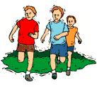

|  |
My nephew, Mitch, loves to run competitively, like cross country races, marathons, or whatever. Recently, he competed in a special for-charity race in a small Kansas town near where he lives: the Midtown City Marathon.On this occasion, he paced himself in the following way: he ran the first 50% of the distance at his normal, preferred running speed. Then for the next third of the distance he increased his tempo by 25%. For the final portion of his run (3 km), he increased his previous speed by another 20%.
Given that he finished this marathon in the fantastic time of 1 hour, 19 minutes, state now his running speed (i.e. in kilometers per hour) for the final portion of the event.
Extra: How many minutes did Mitch spend running at each of the 3 speeds?
| Comments? Send e-mail. | Back to top | Go back to Home Page | Go back to Contents |